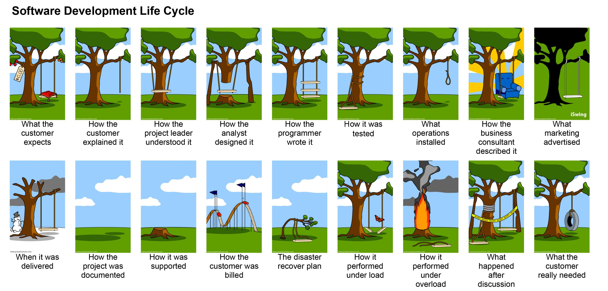
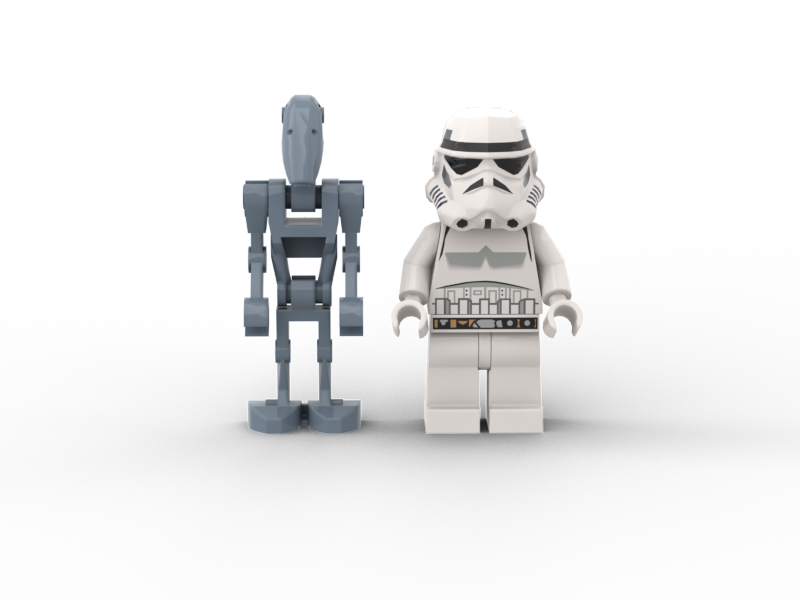
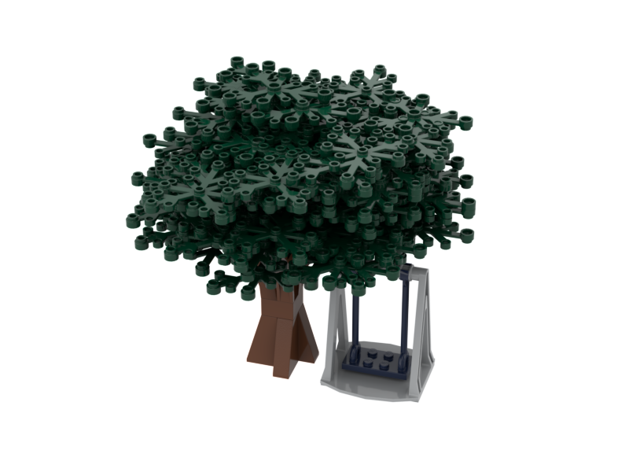
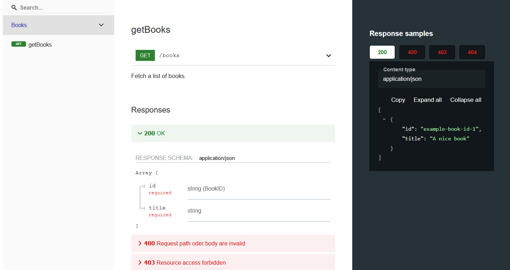
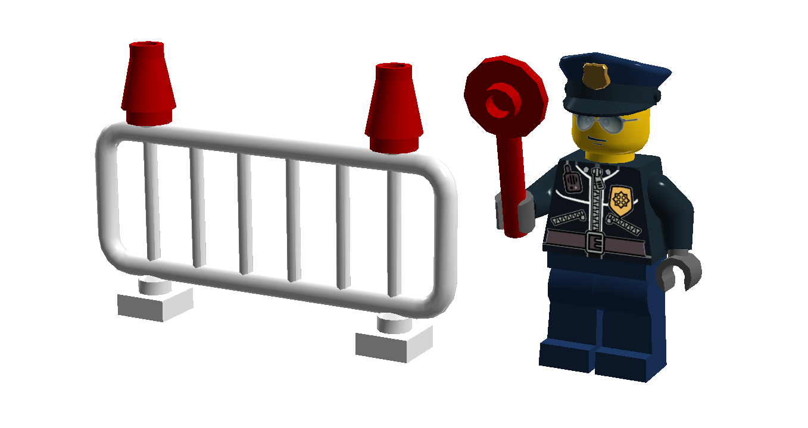

OpenAPI
Specify Communication
@ThomasWeinert
@thw@phpc.social
About Me
- dimensional GmbH
- Application Developer
- Programming >= 20 years
- XML Fanatic
- Brompton Rider
TOC
- About OpenApi
- Example
- Documentation
- Validation
- Code Generator
Development Livecycle
About OpenAPI
- REST
- Swagger
- Current Version: OpenApi 3.1
JSON vs YAML
Tools
https://openapi.tools/- IDE integration
- (Graphical) editors
- Validation
- Code / documentation generators
- Testing / mock servers
Example
Basic Information
Schemas
Enumerable (Definition)
Enumerable (Use)
Responses (Definition)
Paths
Paths / Responses
Example Data
Documentation
Redoc
Validation
Spectral
> test
> spectral lint -v ./api/**/*.{openapi,swagger}.{json,yml,yaml}
Found 55 rules (44 enabled)
Linting /talks/talk-openapi/example/api/example.openapi.yaml
No results with a severity of 'error' found!Specification
> test
> spectral lint -v ./api/**/*.{openapi,swagger}.{json,yml,yaml}
Found 55 rules (44 enabled)
Linting /talks/talk-openapi/example/api/example.openapi.yaml
/talks/talk-openapi/example/api/example.openapi.yaml
2:6 warning info-contact Info object must have "contact" object. info
✖ 1 problem (0 errors, 1 warning, 0 infos, 0 hints)Code Style
> test
> spectral lint -v ./api/**/*.{openapi,swagger}.{json,yml,yaml}
Found 55 rules (44 enabled)
Linting /talks/talk-openapi/example/api/example.openapi.yaml
/talks/talk-openapi/example/api/example.openapi.yaml
21:20 warning operationIds-camel-case operationId is not lowerCamelCase. paths./books.get.operationId
✖ 1 problem (0 errors, 1 warning, 0 infos, 0 hints)Code Style Rule
.spectral.yaml
extends: spectral:oas
rules:
operationIds-camel-case:
description: Operation IDs MUST be written in lowerCamelCase
message: '{{property}} is not lowerCamelCase.'
recommended: true
type: style
given: '$.paths.*[?( @property === ''get'' || @property === ''put'' || @property === ''post'' || @property === ''delete'' || @property === ''options'' || @property === ''head'' || @property === ''patch'' || @property === ''trace'' )]'
then:
field: operationId
function: pattern
functionOptions:
match: '^([a-z][A-Za-z0-9]*)+$'Code Generator
OpenApi Generator
- Java
- API clients
- Server stubs
- Documentation generators
Configure
example.angular.config.json
Run
{
scripts: {
"build:angular:example": "java -jar tools/openapi-generator-cli-6.0.1.jar generate -i api/example.openapi.yaml -g typescript-angular -o build/angular/example -c api/example.angular.config.json",
"compile:angular:example": "ng-packagr -p build/angular/example/ng-package.json",
}
}Mocks
Fake it until you make it.Angular Application
app.module.ts
const importedModules = [
BrowserModule,
BrowserAnimationsModule,
HttpClientModule,
YourApiModule.forRoot(AppConfiguration.forApi),
YourProjectModule,
AppRoutingModule
];
if (AppConfiguration.isDevelopment()) {
console.log('Enabling mocked services.');
importedModules.push(MocksModule);
}
@NgModule({Angular HTTP Interceptor
fake-backend.ts
import * as books from './data/books.json';
@Injectable()
export class FakeBackendInterceptor implements HttpInterceptor {
intercept(request: HttpRequest<any>, next: HttpHandler): Observable<HttpEvent<any>> {
const { url, urlWithParams, method, headers, body } = request;
if (!url.startsWith('http://localhost/fake-api')) {
return next.handle(request);
}
}
return of(null)
.pipe(mergeMap(handleRoute))
.pipe(materialize())
.pipe(delay(200))
.pipe(dematerialize());
function handleRoute() {
console.log('API Request: ', method, urlWithParams);
switch (true) {
case url.endsWith('/books') && method === 'GET':
return getBooks();
//...
}
}
function getBooks() {
return ok(
(books as any).default
);
}
function ok(responseBody?, status = 200) {
console.log('Api Response', status, responseBody);
return of(new HttpResponse({ status, body: responseBody }));
}
}
export const fakeBackendProvider = {
// use fake backend in place of Http service for backend-less development
provide: HTTP_INTERCEPTORS,
useClass: FakeBackendInterceptor,
multi: true
};